Warning: package 'dlm' was built under R version 4.3.1
modFim <-function(y,mod){ ffbs <-dlmGibbsDIG(y, mod = mod, n.sample =5000,a.y=1,b.y=100,a.theta=1,b.theta=100,save.states =FALSE, thin =0)v_sim <-sample(ffbs$dV[-(1:2500)],2500,T)q <-dim(ffbs$dW)[2]w_sim <-NULLfor(j in1:q){ w_sim <-c(w_sim, mean(sample(ffbs$dW[,j][-(1:2500)],2500,T)))}# declarando as variâncias na quádruplamod$V <-mean(v_sim)mod$W <-diag( w_sim,q)return(mod)}
Os modelos linearas dinâmicos polinomiais possuem uma função de previsão polinomial.
Os podemos mais utilizados na prática são os de ordem 1 e 2, também conhecidos como modelo de nível e de tendência linear, respectivamente.
7.1 O modelo de nível
O modelo de ordem 1, também conhecido como modelo de nível, possui função de previsão da forma
\[f_t(h)=m_t,\] onde \(m_t\) é a média da série para o tempo \(t\). Esse tipo de modelo é útil para séries temporais que possuem oscilações na média (ou nível) mas sem exibir uma tendência forte.
Considere, por exemplo, a série com valores anuais das cheias do Rio Nilo entre 1871 e 1970.
Nile <-ts(Nile, start =1900)ts.plot(Nile, lwd =2)
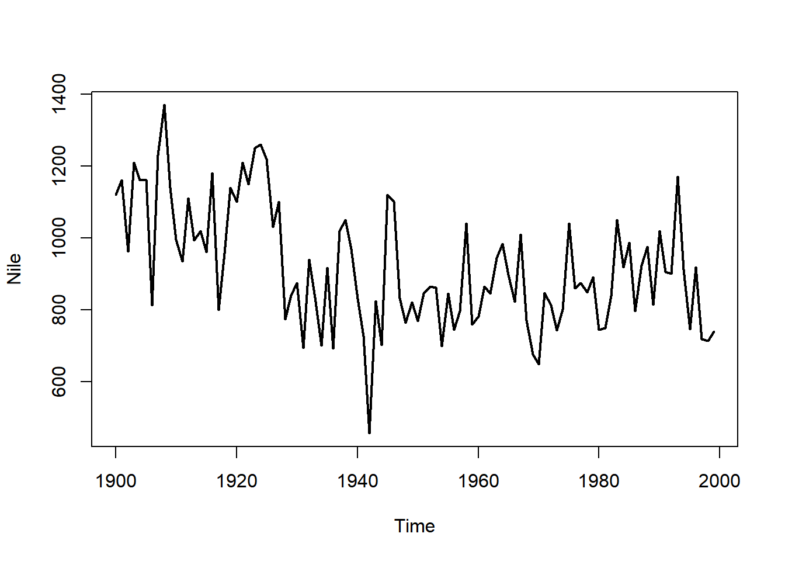
acf(Nile, lwd =2)
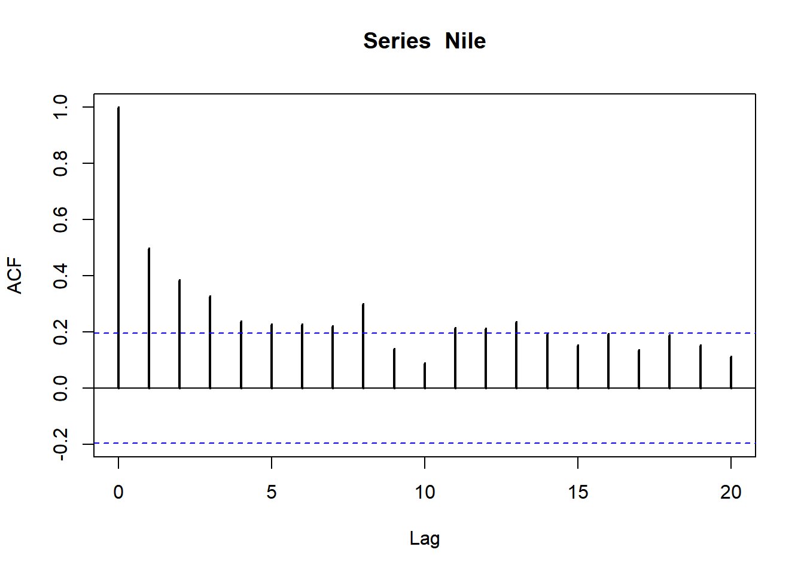
É possível notar que há autocorrelação na série, mas o correlograma não revela uma tendência forte. Abaixo mostramos a tendência estimada via loess.
tempo <-1:length(Nile)lw <-loess( Nile ~ tempo)tend <-ts(lw$fitted, start =start(Nile))ts.plot(Nile)lines(tend, lwd =2, col ='tomato')
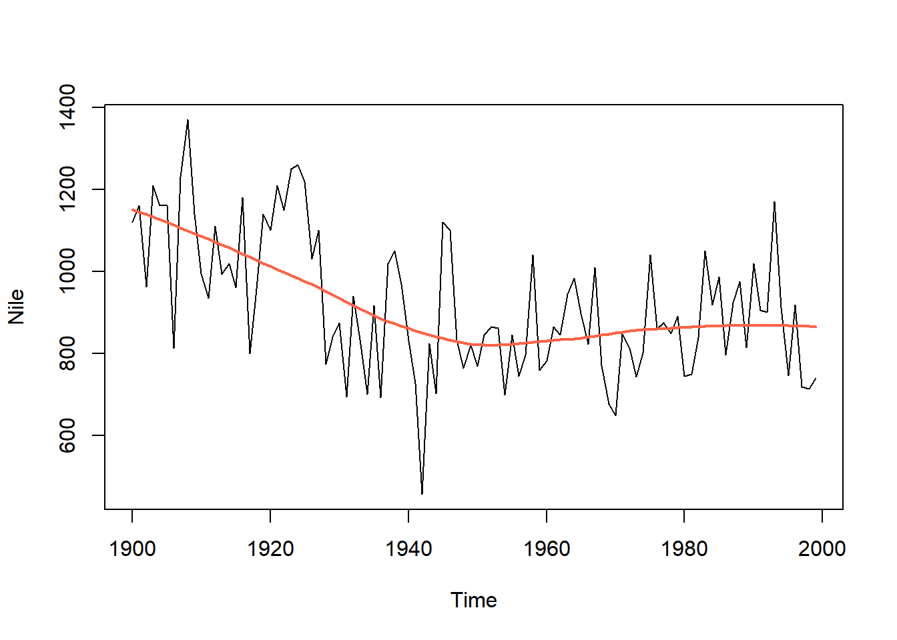
A tendência estimada via loess parece revelar um comportamento inicial de queda e depois meio século de valores oscilando em torno de do nível. Vamos analisar isso utilizando um modelo linear dinâmico para o nível.
Primeiro, vamos criar um objeto que possui os componentes \(F\) e \(G\) adequados. Para tanto, basta usar a função dlmPoly e escolher a ordem do modelo polinomial.
library(dlm)mod <-dlmModPoly( order =1)
Se você tiver curiosidade, \(F\) e \(G\) estão guardados em lista, com os nomes FF e GG
Dentro do objeto mod há um componente denomina m0. Ele é a estimativa do nível antes de 1. Vamos simplesmente dizer que este é igual ao valor observado em 1900
mod$m0 <- Nile[1]
Agora, vamos estimar as variâncias do modelo, para obter \(V\) e \(W\):
mod <-modFim( Nile, mod)
Agora, vamos aplicar o Teorema de Bayes, através de uma série de atualizações conhecidas como Filtro de Kalman
filtro <-dlmFilter(Nile, mod)
Em modelos lineares dinâmicos, definimos o erro de previsão por
\[y_t-E(y_t|D_{t-1})=y_t-f_t.\] Se todos os sinais foram bem ajustados, os erros de previsão possuem comportamento com um ruído branco. O valor de \(f_t\) está no objeto filtro.
erro <- Nile - filtro$fts.plot(erro)
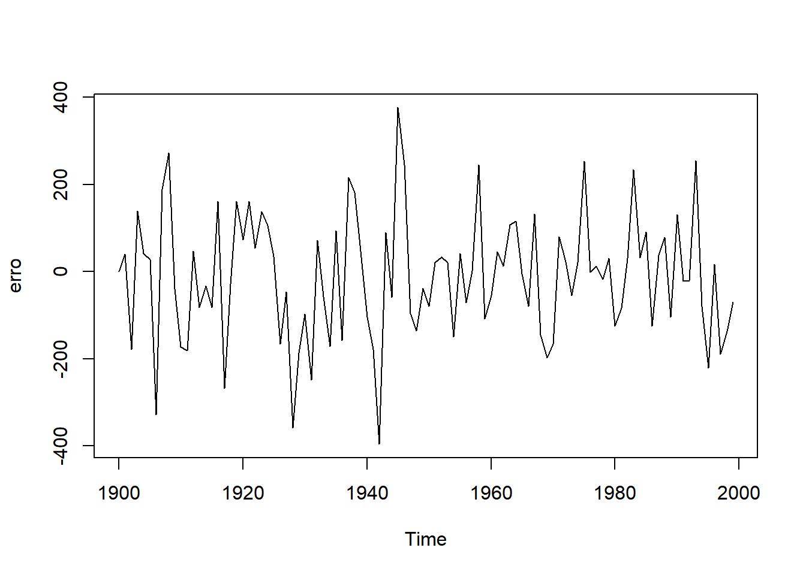
acf(erro)
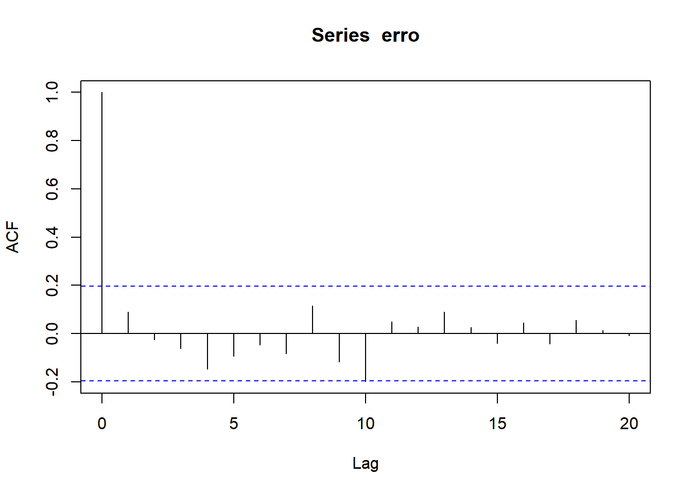
Agora, vamos reaplicar o Teorema de Bayes, considerando a amostra toda, para obter a estimativa suavizada do nível.
suave <-dlmSmooth(filtro)ts.plot(Nile)lines( suave$s, lwd =2, col ='seagreen')
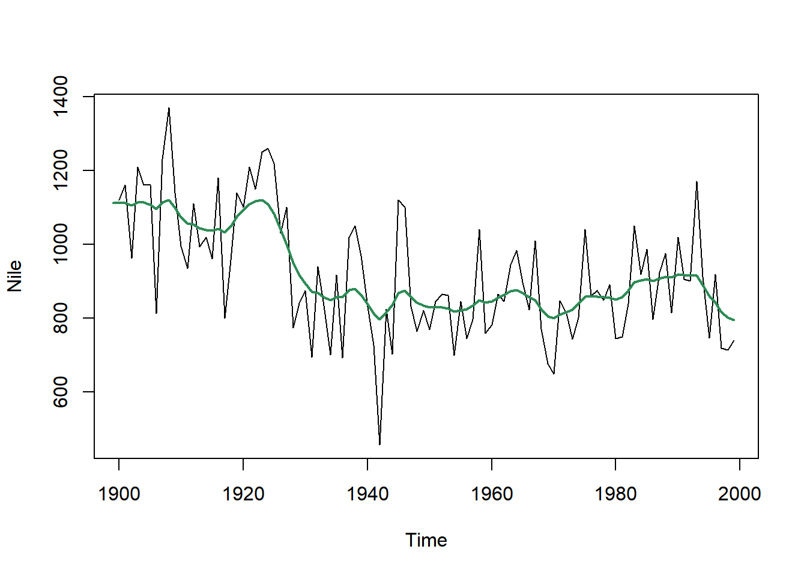
Também podemos fazer um intervalo de credibidade para o nível suavizado.
ts.plot(Nile)lines( suave$s, lwd =2, col ='seagreen')# variâncias da suavizaçãovs <-dlmSvd2var(suave$U.S, suave$D.S)# intervalo de credibilidadelines( suave$s -1.96*sqrt(unlist(vs)) )lines( suave$s +1.96*sqrt(unlist(vs)) )
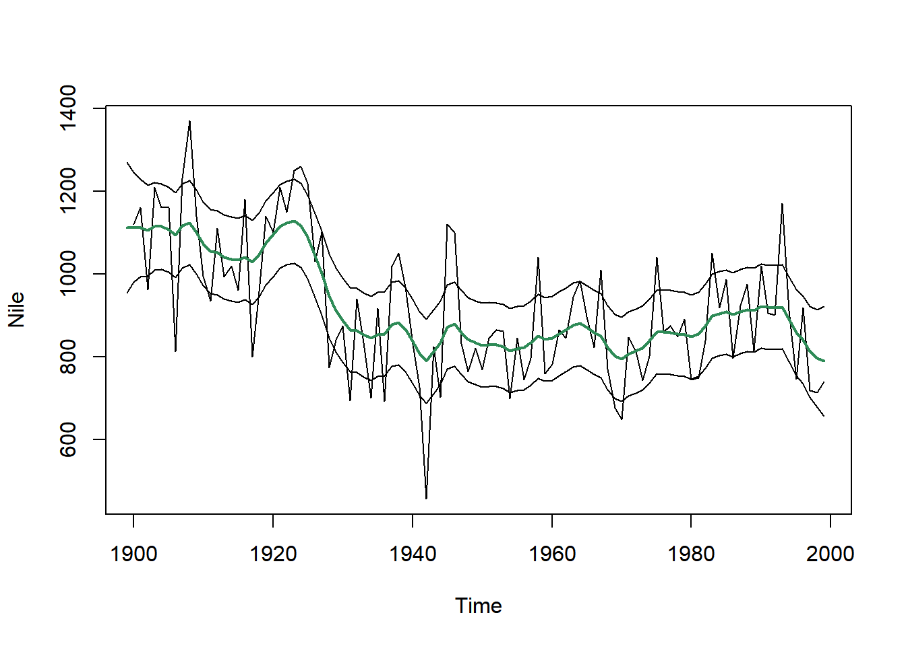
Podemos fazer previsões com a função
prev <-dlmForecast(filtro, 3)prev$f
Time Series:
Start = 2000
End = 2002
Frequency = 1
Series 1
[1,] 789.4355
[2,] 789.4355
[3,] 789.4355
7.2 O modelo de tendência
O modelo linear dinâmico polinomial de segunda ordem é um modelo de tendência, uma vez que sua função de previsão é
\[f_t(h)=m_{1,t}+m_{2,t}h.\]
Aqui, existem dois estados para cada tempo: \(\theta_{1,t}\) e \(\theta_{2,t}\). No tempo \(t\), a média a posteriori dos estados possui a seguinte interpretação:
\(m_{1,t}\): é o nível (média) da série no tempo \(t\), estimado com todos os dados disponíveis até o tempo \(t\)
\(m_{2,t}:\) é a inclinação da tendência da série no tempo \(t\), estimado com todos os dados disponíveis até o tempo \(t\). Em particular, \(m_{2,t}>0\) indica tendência de crescimento, enquanto que \(m_{2,t}<0\) indica decrescimento.
Voltemos à série de acidentes aéreos mensais. `
ts.plot(fab_mes, ylab ='No acidentes/mês')
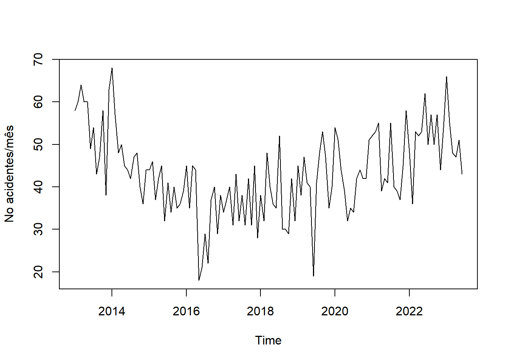
acf(fab_mes, main='')
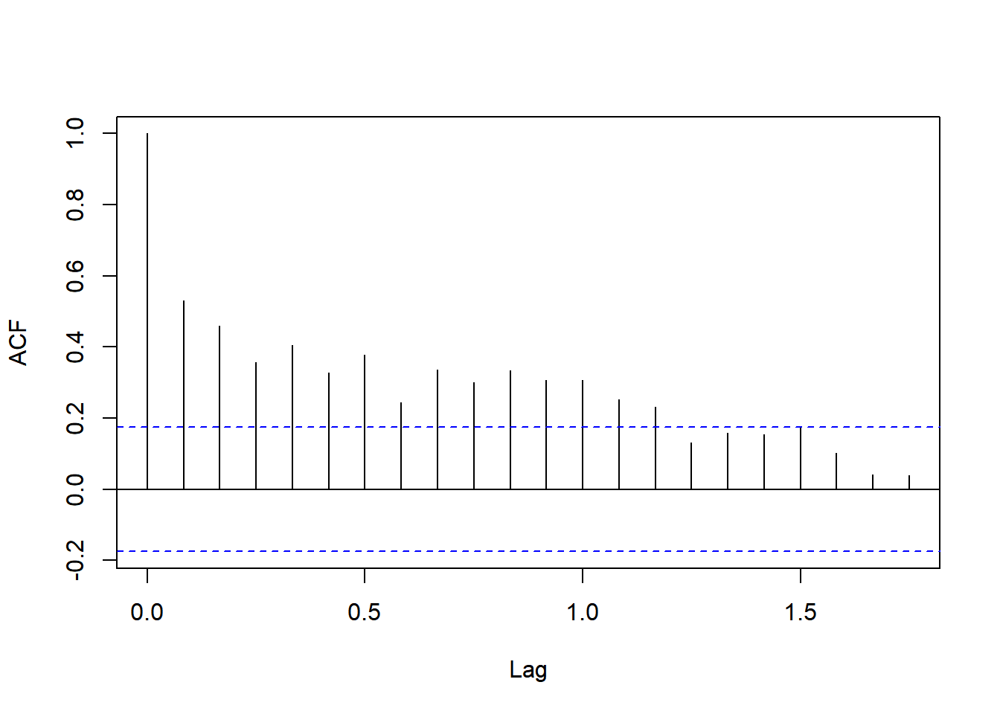
Vamos construir um modelo linear para a tendência:
require(dlm)mod <-dlmModPoly(2)
Em seguida, precisamos dar uma informação inicial sobre os estados no tempo \(0\) (ou seja, a média do nível e da tendência antes da série ser observada). Um bom começo é supor que \(m_{1,0}\) é o valor \(y_1\) - o primeiro valor observado. Além disso, é usual iniciar a análise supondo que a tendência é nula.
mod$m0 <-c(fab_mes[1],0)
Agora, vamos estimar a variâncias do modelo:
mod <-modFim(fab_mes, mod)
Vamos estimar os parâmetros dos estados via filtro de Kalman.
filtro <-dlmFilter(fab_mes, mod)
Vamos analisar os erros de previsão.
erros <- fab_mes - filtro$fts.plot(erros)
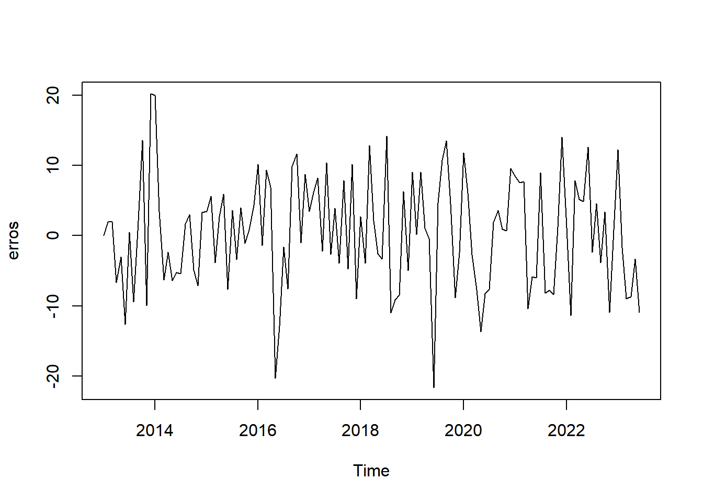
acf(erros)
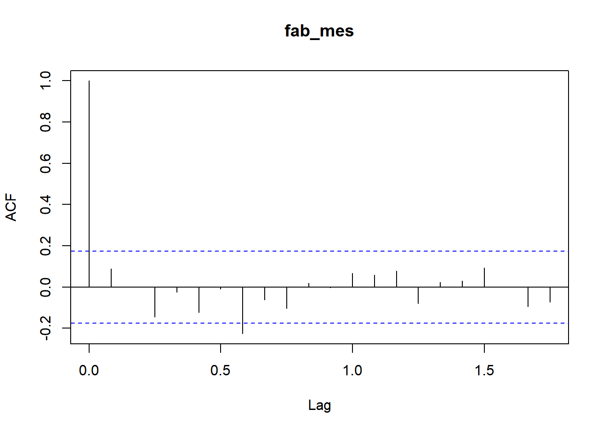
Ambos os gráficos acima mostram um comportamento de ruído branco.
Podemos fazer previsões mais longas com este modelo. Abaixo vamos prever o número de acidentes para os próximos 12 meses.
previsao12 <-dlmForecast(filtro,12)previsao12$f
Jan Feb Mar Apr May Jun Jul Aug
2023 51.85657 51.87388
2024 51.96043 51.97774 51.99505 52.01236 52.02967 52.04698
Sep Oct Nov Dec
2023 51.89119 51.90850 51.92581 51.94312
2024
Vamos colocar essas informações em um gráfico. Vamos começar com as previsões um passo a frente, que são utilizadas para o cálculo do erro de previsão e queforam realizadas dentro do filtro de Kalman - notem que vamos começar as previsões em março, uma vez que as outras foram irreais). Em seguida, vamos apresentar as previsões com um intervalo de 90% de predição (não se usa 95% para previsões porque os intervalos em geral são grandes demais)
ts.plot(fab_mes,xlim=c(2013,2025), ylab='No. acidentes mensais', ylim=c(0,75))lines( window(filtro$f,start=c(2013,3)), lty=2,lwd =2)# medidas para o intervalo de previsãomedia_prev <- previsao12$fmedia_prev <-ts(media_prev, start =c(2023,7), frequency =12)desv_prev <-sqrt( unlist( previsao12$Q))desv_prev <-ts(desv_prev, start =c(2023,7), frequency =12)# intervalo de 90% para as previsõeslines(media_prev, lwd =2, col ='blue')lines(media_prev -1.64*desv_prev, lwd =2, col ='blue')lines(media_prev+1.64*desv_prev, lwd =2, col ='blue')# legendalegend('bottomleft',c('Série observada','Previsão 1 passo à frente', 'Previsão de 12 meses'), lty=c(1,2,1), col =c(1,1,'blue'), bty ='n')
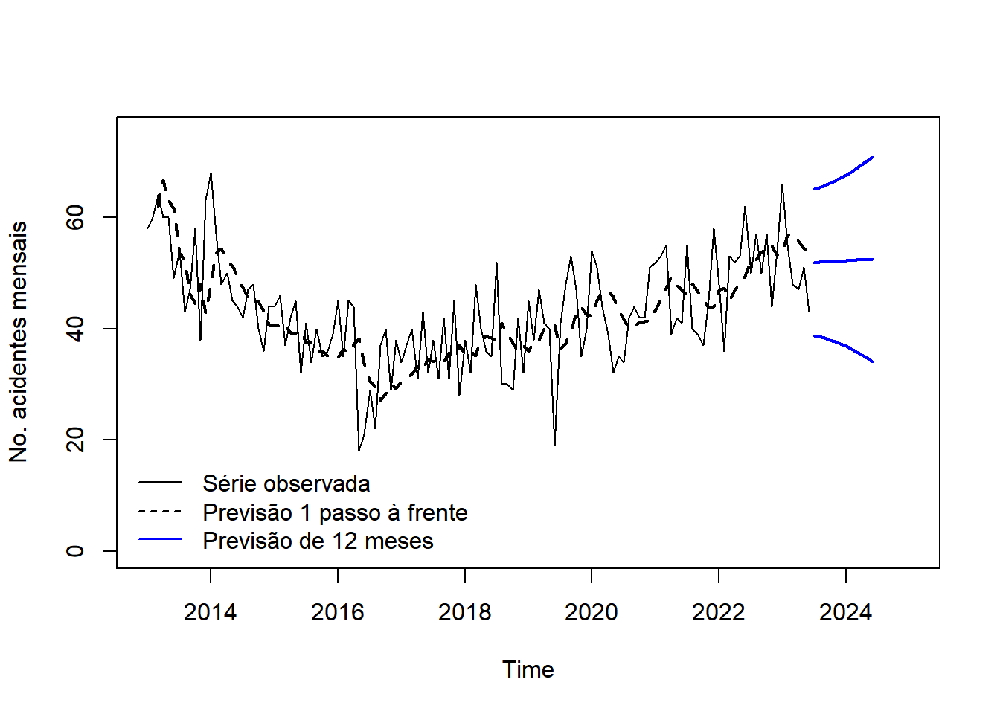
Agora vamos estudar os estados suavizados. `
suave <-dlmSmooth(filtro)
A obtenção das variâncias é mais delicada. Em cada instante de tempo, é calculada a matriz
\[S_t=\left( \begin{array}{cc} s_{11,t} & s_{12,t}\\s_{12,t}&s_{22,t}\end{array}\right),\] que reprenta em sua diagonal a variância dos estados e fora dela a covariância entre eles. Por motivos computacionais, a matriz \(S_t\) não é computada diretamente, mas sim duas matrizes \(U_t\) e \(D_t\) tais que
\[S_t=U_t D_t U_t'\] Essa decomposição, conhecida como espectral, possui vantagens numéricas que facilitam o processo de inversão necessário no filtro de Kalman. A função abaixo recupera o desvio padrão a partir de \(U_t\) e \(D_t\).
sdSmooth <-function(suave){ n <-nrow(suave$s) q <-ncol(suave$s) dp <-array(NA_real_, c( n , q))for(i in1:n){ S <-dlmSvd2var(suave$U.S[[i]],suave$D.S[i,]) dp[i,] <-sqrt( diag(S)) } dp}
Abaixo, vamos obter os desvios da suavização
sd <-sdSmooth(suave)
Vamos começar a análise com o nível. Observe que, como são 2 estados, devemos selecionar a coluna 1.
nivel_medio <- suave$s[,1]sd_nivel <- sd[,1]ts.plot(fab_mes)lines(nivel_medio, lwd =2, col ='seagreen')# intervalor de credibilidade (95%) para o nívellines(nivel_medio -1.96*sd_nivel, lwd =2, col ='seagreen', lty=2)lines(nivel_medio +1.96*sd_nivel, lwd =2, col ='seagreen', lty=2)
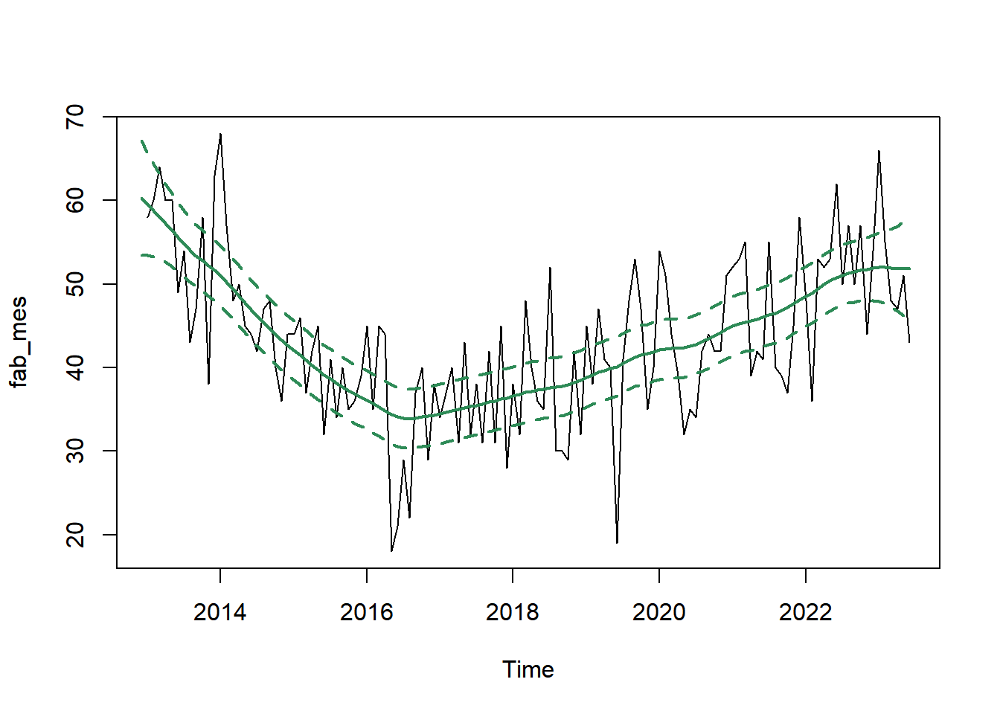
Por último, vamos analisar a inclinação da tendência. Como a média da série já foi modelada pelo nível, os gráficos das demais componentes não são colocados sobre a série original. Abaixo mostramos o gráfico da inclinação, com seu respectivo intervalo.
tend <- suave$s[,2]sd_tend <- sd[,2]ts.plot(tend, lwd =2, ylim=c(-1.5,1), ylab='Inclinação da tendência')lines(tend-1.96*sd_tend)lines(tend+1.96*sd_tend)abline(h=0, lty =2)# período de mudança da tendência de decrescente para crescenteabline(v=2016+10/12, lty =2)points(2016+10/12,0, pch =15, cex =1.2)text(2016+11/12,.1,'Oct 16', pos =2)# identificando a desaceleraçãox <-window(tend, start=c(2022,7) )abline(v=2022+7/12, lty =2)points(2022+7/12, x[1], pch =15, cex =1.2)text(2022+7/12,x[1],'Jul 22', pos =2)
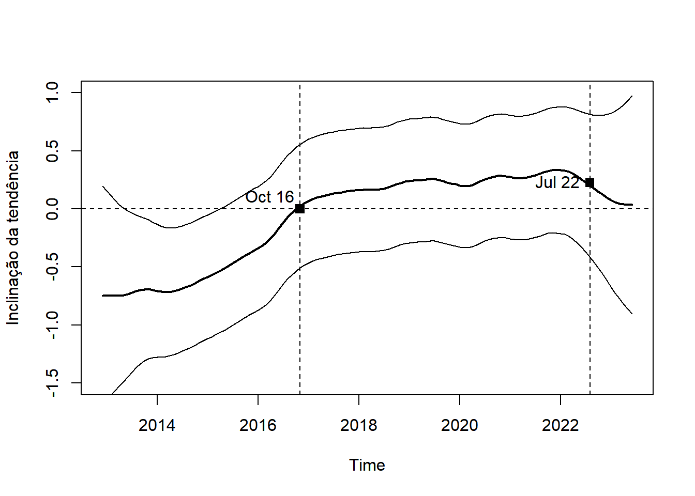
Com o gráfico acima, identificamos muitas características interessantes.
Note que o zero está presente na maior parte do intervalo. Portanto, podemos apenas afirmar que em certos períodos, a tendência de crescimento/decrescimento foram mais prováveis.
Em relação à inclinação média, podemos afirmar que existem evidências de que o padrão de decrescimento estava desacelerando antes de 2016, culminando na inflexão em outubro. Nesse período a série passou a ter uma taxa de crescimento relativamente constante até Julho de 2022, quando começou a desacelar.
7.3 Exercícios
Abaixo, mostramos o número de homicídios mensais em Manaus entre Janeiro de 1979 e Dezembro de 2009.